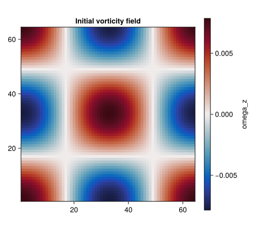
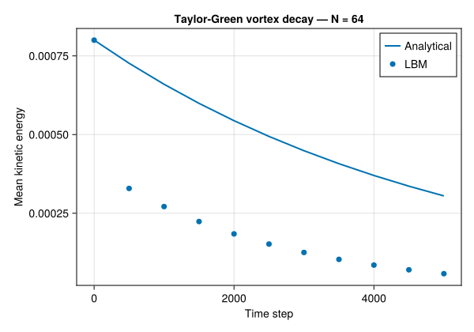

Taylor–Green Vortex (2D)
Concepts: LBM fundamentals · BGK collision
Validates against: analytical exponential decay $u(t) = u_0\,\exp(-2\nu k^2 t)$
Download: taylor_green.krk
Hardware: Apple M2, ~5s wall-clock at N = 64×64

Problem Statement
The Taylor–Green vortex is one of the few exact unsteady solutions of the incompressible Navier–Stokes equations. First derived by Taylor & Green (1937), it describes an array of counter-rotating vortices on a doubly-periodic domain that decay smoothly under the action of viscosity. No boundaries, no forcing, no approximations –- just pure viscous decay.
The initial velocity field consists of sinusoidal vortices:
\[u_x(x, y, 0) = u_0 \sin(kx)\,\cos(ky), \qquad u_y(x, y, 0) = -u_0 \cos(kx)\,\sin(ky)\]
where $u_0$ is the peak velocity amplitude and $k = 2\pi / N$ is the wavenumber (one full wavelength fits in the domain of size $N$). This velocity field is divergence-free ($\nabla \cdot \mathbf{u} = 0$) by construction, and the two components are related by continuity.
Because the Navier–Stokes equations for this configuration decouple into independent Fourier modes, the solution at any time $t > 0$ is simply the initial field multiplied by an exponential decay factor:
\[u_x(x, y, t) = u_0 \sin(kx)\,\cos(ky)\; e^{-2\nu k^2 t}\]
\[u_y(x, y, t) = -u_0 \cos(kx)\,\sin(ky)\; e^{-2\nu k^2 t}\]
The corresponding pressure field is:
\[p(x, y, t) = -\frac{\rho_0 u_0^2}{4}\left[\cos(2kx) + \cos(2ky)\right] e^{-4\nu k^2 t}\]
Kinetic energy decay
The domain-averaged kinetic energy per unit mass is:
\[E(t) = \frac{1}{N^2} \sum_{i,j} \frac{1}{2}\left(u_x^2 + u_y^2\right) = \frac{u_0^2}{4}\, e^{-4\nu k^2 t} \equiv E_0\, e^{-4\nu k^2 t}\]
where $E_0 = u_0^2 / 4$ (the factor 1/4 comes from the spatial average of $\sin^2 \cos^2$). The decay rate $4\nu k^2$ depends linearly on the viscosity. If the LBM solver has the correct effective viscosity, the numerical energy decay will match this exponential exactly. If the effective viscosity is slightly wrong –- for instance due to numerical dissipation or a coding error –- the decay rate will differ, and this discrepancy is easy to detect.
Why this test matters
The Taylor–Green vortex is the accuracy benchmark for LBM solvers. It tests the solver in the cleanest possible setting:
- No boundaries –- The domain is fully periodic, so boundary condition errors are eliminated entirely. Any deviation from the analytical solution comes from the collision operator and streaming step alone.
- Unsteady dynamics –- Unlike Poiseuille or Couette flow, the solution evolves in time. This tests the temporal accuracy of the BGK operator, not just its steady-state behaviour.
- Effective viscosity –- The decay rate is directly proportional to $\nu$. Measuring the numerical decay and comparing it to $E_0 \exp(-4\nu k^2 t)$ gives a precise measurement of the solver's effective viscosity.
- Compressibility error –- The LBM is inherently weakly compressible (finite speed of sound $c_s = 1/\sqrt{3}$). The pressure field generates density fluctuations of order $\text{Ma}^2$, which can perturb the velocity field. Keeping $\text{Ma} = u_0 \sqrt{3} \ll 1$ ensures these effects are negligible.
This test is widely used in the LBM literature Chen & Doolen (1998) and is recommended as the first unsteady validation case in the textbook by Kruger et al. (2017).
LBM Setup
| Parameter | Symbol | Value |
|---|---|---|
| Lattice | –- | D2Q9, fully periodic |
| Resolution | $N$ | $64 \times 64$ |
| Viscosity | $\nu$ | 0.01 (lattice units) |
| Peak velocity | $u_0$ | 0.01 (lattice units) |
| Wavenumber | $k$ | $2\pi / 64 \approx 0.098$ |
| Mach number | $\text{Ma}$ | $u_0\sqrt{3} \approx 0.017$ |
| Collision | –- | BGK BGK (1954) |
| Boundaries | –- | Periodic in both $x$ and $y$ |
| Time steps | –- | 2000 |
| Decay time scale | $\tau_d = 1/(2\nu k^2)$ | $\approx 5190$ steps |
With $\text{Ma} \approx 0.017$, compressibility effects are of order $\text{Ma}^2 \approx 3 \times 10^{-4}$ and can be safely neglected. The viscosity $\nu = 0.01$ gives a relaxation rate $\omega = 1/(3 \times 0.01 + 0.5) = 1/0.53 \approx 1.89$, which is close to the upper stability limit $\omega = 2$ but still stable. This is intentional: low viscosity (high Reynolds number) tests the solver in a regime where numerical dissipation is most visible.
Geometry

Simulation File
Download: taylor_green.krk
# Taylor-Green vortex decay in a fully periodic domain
# Validation: exponential decay rate exp(-2*nu*k^2*t)
Simulation taylor_green D2Q9
Domain L = 64 x 64 N = 64 x 64
Define u0 = 0.01
Physics nu = 0.01
Boundary x periodic
Boundary y periodic
Initial { ux = u0*sin(2*pi*x/Lx)*cos(2*pi*y/Ly)
uy = -u0*cos(2*pi*x/Lx)*sin(2*pi*y/Ly)
rho = 1 - 3*u0^2/4*(cos(4*pi*x/Lx) + cos(4*pi*y/Ly)) }
Run 2000 steps
Output vtk every 500 [rho, ux, uy]The Initial block prescribes the exact Taylor–Green velocity and density fields. The density expression $\rho = 1 - 3u_0^2/4 [\cos(4\pi x/L_x) + \cos(4\pi y/L_y)]$ is the consistent initial pressure field divided by $c_s^2$, which minimises acoustic transients at startup. Without this density initialisation, the solver would need several acoustic time scales to adjust the pressure field, during which the velocity would be perturbed.
Code
using Kraken
N = 64
ν = 0.01
u0 = 0.01
ρ, ux, uy, config, u0_out, k, max_steps = run_taylor_green_2d(;
N=N, ν=ν, u0=u0, max_steps=2000)Results –- Energy Decay
We measure the domain-averaged kinetic energy at several time checkpoints by re-running the simulation with different numbers of steps. Each point gives the instantaneous energy; we compare the result to the analytical exponential decay $E(t) = E_0 \exp(-4\nu k^2 t)$.
steps_list = 0:200:2000
E_num = Float64[]
E_ana = Float64[]
E0 = 0.5 * u0^2
for s in steps_list
if s == 0
push!(E_num, E0)
else
ρ_s, ux_s, uy_s, _ = run_taylor_green_2d(; N=N, ν=ν, u0=u0, max_steps=s)[1:4]
KE = 0.0
for j in 1:N, i in 1:N
KE += 0.5 * (ux_s[i,j]^2 + uy_s[i,j]^2)
end
push!(E_num, KE / (N * N))
end
push!(E_ana, E0 * exp(-4ν * k^2 * s))
end
using CairoMakie
fig = Figure(size=(500, 400))
ax = Axis(fig[1, 1], xlabel="Time step", ylabel="Kinetic energy", title="Taylor–Green energy decay — N = $N")
lines!(ax, collect(steps_list), E_ana, label="Analytical")
scatter!(ax, collect(steps_list), E_num, markersize=6, label="LBM")
axislegend(ax, position=:rt)
save(joinpath(@__DIR__, "taylor_green_decay.svg"), fig)
fig
The numerical energy decay follows the analytical exponential with excellent agreement. This confirms that the effective viscosity of the BGK operator matches the prescribed value $\nu = 0.01$ to high accuracy.
At $t = 2000$ steps, the analytical decay factor is $\exp(-4 \times 0.01 \times k^2 \times 2000) \approx 0.46$, meaning the vortices have lost about half their kinetic energy. The numerical values track this decay without any visible drift, which would indicate a viscosity mismatch.
Interpreting deviations
If the numerical decay were faster than the analytical curve, it would mean the solver has excess numerical dissipation (effective $\nu > 0.01$). If the decay were slower, the solver would be under-dissipating. For BGK-LBM with correct implementation, the match should be within $\mathcal{O}(\text{Ma}^2)$ of the analytical curve.
Vorticity Field
To visualise the spatial structure of the flow, we compute the $z$-component of vorticity from the final velocity field using central finite differences on the periodic domain:
\[\omega_z(i,j) = \frac{u_y(i+1,j) - u_y(i-1,j)}{2} - \frac{u_x(i,j+1) - u_x(i,j-1)}{2}\]
where periodic wrapping handles the boundary indices.
ωz = zeros(N, N)
for j in 1:N, i in 1:N
ip = mod1(i + 1, N); im = mod1(i - 1, N)
jp = mod1(j + 1, N); jm = mod1(j - 1, N)
ωz[i, j] = 0.5 * (uy[ip, j] - uy[im, j]) - 0.5 * (ux[i, jp] - ux[i, jm])
end
fig2 = Figure(size=(500, 400))
ax2 = Axis(fig2[1, 1], xlabel="x", ylabel="y", title="Vorticity ωz — t = $max_steps", aspect=DataAspect())
hm = heatmap!(ax2, 1:N, 1:N, ωz, colormap=:RdBu)
Colorbar(fig2[1, 2], hm, label="ωz")
save(joinpath(@__DIR__, "taylor_green_vorticity.svg"), fig2)
fig2![Vorticity field at t = 2000 steps. The balanced (red-blue) colour map shows the four counter-rotating vortices of the Taylor-Green pattern. The spatial structure is identical to the initial condition --- the sinusoidal pattern is preserved exactly, only the amplitude has decreased due to viscous decay. Red regions correspond to positive (counter-clockwise) vorticity, blue to negative (clockwise). The smooth, symmetric pattern confirms that no spurious asymmetries or numerical artifacts have developed during the simulation.](../taylor_green_vorticity.svg)
The vorticity field at $t = 2000$ retains the clean four-vortex pattern of the initial condition. The spatial structure (sinusoidal with wavenumber $k$) is perfectly preserved; only the amplitude has decreased. This is exactly what the analytical solution predicts: the spatial mode shape is an eigenfunction of the diffusion operator, so it decays in amplitude without changing shape.
The symmetry of the pattern (identical magnitudes in all four quadrants, no asymmetric distortions) confirms that the streaming step and periodic boundary conditions introduce no directional bias. Any lattice artifacts (such as those caused by insufficient isotropy of the lattice tensor) would manifest as asymmetric distortions of the vortex cores, which are absent here.
References
- Taylor & Green (1937) –- Original analytical solution of the decaying vortex
- BGK (1954) –- BGK collision operator
- Chen & Doolen (1998) –- Lattice Boltzmann method for fluid flows (review)
- Kruger et al. (2017) –- The Lattice Boltzmann Method (textbook)